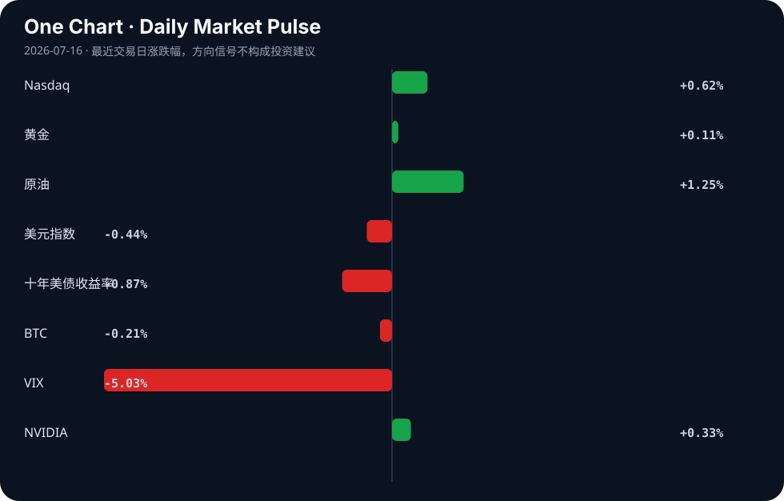

Daily Intelligence
2026-07-16｜Thursday
Today’s Thesis｜今日一句话
全球AI监管正从宏观原则加速走向地方性执法碎片化，而硬件端的自研与并购正成为科技巨头规避算力瓶颈、对冲合规成本的护城河；合规壁垒与垂直整合的博弈将重塑AI产业链的利润分配。
① Executive Summary｜30 秒
1. AI：监管与治理框架在多地（伊利诺伊、夏威夷、欧洲、中国）密集落地或推进，AI从野蛮生长进入合规约束期 [A1][A7][A11][A13]。
2. 商业：苹果拟收购AI芯片公司 [A2]，硬件垂直整合趋势明确；无屏AI支付 [A20] 与农业/医疗等垂直应用 [A9][A22] 开始实质性渗透。
3. 宏观：加拿大央行维持利率但下调增长预期 [B21]，美联储重申通胀目标 [B23]，全球资本在“降息预期落空”与“经济弱复苏”间重新平衡 [B11]。
② AI Daily
监管落地：从原则走向执法
What Happened：伊利诺伊州颁布前沿AI安全法 [A1]，夏威夷州长签署打击AI风险的法案 [A11]，欧洲监管机构对前沿AI风险提出警告 [A7]，中国发布AI治理系列成果 [A13]。 Why It Matters：这标志着AI监管从宏观伦理讨论进入微观执法阶段。地方法规往往比联邦或跨国框架更具实操性，直接约束模型的本地部署与商业变现。 Second-order Effect：地方合规碎片化 → 跨国AI公司合规成本激增 → 中小型AI创企因无法承担多司法辖区合规成本而出清。
硬件护城河：算力与安全的物理收敛
What Happened：传闻苹果拟收购AI芯片公司，股价创新高 [A2]；美国海军签署数据与AI武器化战略 [A17]。 Why It Matters：算力瓶颈和地缘安全限制正倒逼头部玩家走向硬件垂直整合。通用GPU的性价比与安全可控性边际递减，专用芯片(ASIC)成为必选项。 Second-order Effect：通用算力需求放缓 → 定制化AI芯片需求爆发 → 芯片设计架构从通用向专用解耦，重塑半导体产业链话语权。
应用破圈：交互范式转移
What Happened：2026 WAIC展示AI走进千行百业 [A9]；无屏AI重塑支付体验 [A20]；爱荷华州推AI进入农业 [A22]。 Why It Matters：AI叙事从“模型能力”转向“场景渗透”。无屏交互和垂直行业结合，意味着交互范式的根本改变和边际成本趋近于零。 Second-order Effect：GUI交互降权 → 意图识别成为流量入口 → 传统基于点击与展示的广告/电商分发逻辑失效。
③ Business Daily
科技：边缘算力与硬件军备竞赛
苹果拟收购AI芯片公司 [A2] 凸显终端算力重要性，e-peas融2200万扩环境IoT技术 [B5]，智能传感器创新加速 [B24]。科技巨头与资本正将重心从云端训练转向边缘推理与低功耗算力，硬件自研率成为估值新锚点。
消费：监管挤破增长泡沫
史上最严监管致医美行业高增长泡沫破裂 [B9]。这不仅是单一行业的整顿，更揭示了依赖营销驱动、合规粗糙的商业模式在监管周期下的脆弱性，估值逻辑正从PS（市销率）强制向PE（市盈率）回归。
制造：供应链重构与本土化
EPC Power在南卡罗来纳新建逆变器工厂 [B16]，南非押注制造业驱动增长 [B13]，eVTOL行业寻求制造突破 [B4]。在全球利率高位与地缘博弈下，实体制造与供应链近岸化成为对冲宏观不确定性的压舱石。
金融：高利率下的弱复苏
加拿大央行维持利率2.25%但下调增长预期至0.7% [B21]，美联储Williams称通胀回归2%是首要任务 [B23]。金融条件收紧的滞后效应开始在经济数据中显现，但通胀粘性阻止了政策转向。
④ Macro Observation｜机制分析
世界正在发生什么？ 全球货币政策进入“高位停滞期”。加拿大央行按兵不动且下调增长预期 [B21]，美联储维持鹰派立场 [B23]，中国经济向好基础仍需巩固 [B15]。
为什么发生？ 通胀的粘性（原油上涨信号）抵消了经济弱复苏的动能，央行在“防滞胀”与“防衰退”间走钢丝，无法在增长尚存时轻易降息。
资本如何流动？ 资本从高估值长久期资产向有现金流支撑的制造与能源回流 [B16][B7]。同时，主权基金（如阿曼52亿未来基金 [B8]）和跨国资本（新加坡投资墨西哥索诺拉 [B3]）绕开发达市场高息环境，寻找新兴市场的实体产业链锚点。
接下来关注什么？ 关注“弱增长+高利率”持续时长对债务结构的反身性挤压：若增长持续低于利率，企业资产负债表将被动收缩，触发被动的去杠杆和资产抛售。这是一个正反馈循环：资产抛售 → 抵押品价值下降 → 信贷收缩 → 增长进一步放缓。
⑤ Signal Dashboard
| 指标 | 最新值 | 今日 | 信号 |
|---|---|---|---|
| Nasdaq | 26,269.23 | ↑ +0.62% | 风险偏好改善 |
| 黄金 | 4,065.70 | ↑ +0.11% | 中性 |
| 原油 | 80.33 | ↑ +1.25% | 通胀压力上升 |
| 美元指数 | 100.50 | ↓ -0.44% | 外部压力缓解 |
| 十年美债收益率 | 4.54 | ↓ -0.87% | 利好久期资产 |
| BTC | 64,819.41 | ↓ -0.21% | 中性 |
| VIX | 15.67 | ↓ -5.03% | 风险偏好改善 |
| NVIDIA | 212.50 | ↑ +0.33% | 风险偏好改善 |
⑥ Deep Insight
AI监管的“巴尔干化”与硬件垂直整合的囚徒困境
当前AI产业正面临一个容易被忽略的结构性分裂：监管的地域化碎片化（“巴尔干化”）与算力硬件的垂直整合正在形成一种危险的囚徒困境。
事实层面，伊利诺伊州颁布了前沿AI安全法 [A1]，夏威夷签署了打击AI风险的法案 [A11]，欧洲监管机构警告前沿AI风险 [A7]，中国则推出自身的AI治理方案 [A13]。这些监管动作并非全球统一的顶层设计，而是基于各地方法域的政治、文化甚至产业保护本能的碎片化响应。同时，苹果拟收购AI芯片公司 [A2]，美国海军推进AI武器化战略 [A17]，这又是硬件层走向封闭与垂直整合的明确信号。
非共识视角在于：普遍观点认为监管会限制科技巨头，但碎片化的监管实际上是巨头最有效的护城河。当合规要求呈现非标准化分布时，跨国部署AI模型的合规成本不是线性增加，而是指数级飙升。中小型开源创企根本没有法律与合规团队去适配伊利诺伊的安全法、夏威夷的打击法案以及欧盟的风险框架。这迫使行业走向一种隐性的“合规即服务”模式——只有控制了从芯片到应用全栈的巨头，才能在物理层和逻辑层实现端到端的合规隔离与审计优化。苹果收购AI芯片公司，不仅是为了算力，更是为了在封闭生态内完成对合规物理层的绝对控制，从而将开源生态暴露在无限的法律责任敞口之下。
这形成了一个囚徒困境：监管者为了本地安全制定特有规则（推断），巨头为了应对规则碎片化而走向封闭（推断），开源社区因合规成本高企而萎缩（待验证信号），最终消费者面临更少的选择和更高的价格。AI的民主化叙事在合规与硬件的双重挤压下正在让位于AI的寡头化现实。
反方观点：开源社区可能通过开发“合规适配中间件”实现一次编写、到处合规，从而打破巨头的垂直整合陷阱。
证伪条件：若未来12个月内，我们看到开源基础模型（如Llama系列）无需针对各地方法规进行架构级分叉，仅通过软件层的合规补丁就能在伊利诺伊、夏威夷和欧盟同时合法部署，且无重大诉讼，则上述“合规壁垒导致寡头化”的逻辑将被证伪。反之，若模型开始出现“伊利诺伊合规版”与“欧洲合规版”的底层分叉，硬件垂直整合将不可逆转。
⑦ Tomorrow Watch
1. 验证苹果AI芯片收购案的潜在反垄断审查信号及交易金额。
2. 关注美联储其他官员对Williams鹰派发言的呼应或修正，特别是对通胀粘性的判断。
3. 追踪伊利诺伊州前沿AI安全法生效后的首批企业合规申报或诉讼案例。
4. 观察加拿大央行下调增长预期后，加拿大房地产市场及银行业坏账率的边际变化。
5. 验证阿曼未来基金17.44亿美元项目的具体流向，确认是否指向新能源或算力基础设施。
⑧ One Chart

图表显示风险偏好改善（纳指、VIX下行）与通胀压力（原油上行）并存。原油上涨与美元走弱呈现相关性，但并非简单因果；原油更多受地缘或供给约束驱动，美元走弱则受外部压力缓解驱动，两者共同构成了美联储维持高利率的物理约束条件。
⑨ Quote of the Day
“All models are wrong, but some are useful.”
— George Box
中文理解：所有模型都会简化现实，但有些模型能帮助你抓住真正重要的机制。
Why it matters today：这句话不是装饰，而是今天观察 AI、商业和宏观变化时的一个思考框架：先看机制，再看价格；先看约束，再看叙事。
⑩ Action Items｜今天值得思考什么
1. 思考：你的业务是否因AI监管的地域碎片化而面临合规成本指数级上升的风险？
2. 验证：苹果收购AI芯片公司的传闻若属实，对现有通用GPU供应商的议价权与市场份额影响。
3. 关注：加拿大央行下调增长预期至0.7%后，高负债企业在“弱增长+高利率”下的再融资风险。
4. 比较：伊利诺伊与夏威夷的AI法案在“前沿模型”定义与合规义务上的差异，寻找潜在的合规套利空间。
5. 追踪：无屏AI支付在反欺诈和身份认证环节的替代机制，评估其对传统支付网关的颠覆速度。
信息边界
本报告信息覆盖2026年7月15日晚间至7月16日晨间的公开新闻聚合源；市场数据为最近交易日收盘值；传闻类新闻（如苹果收购）未经官方确认，需后续验证；宏观判断基于央行已发布文本，未包含未公布的内部决策信息；所有推断与信号已作标注，请勿将推断视为既定事实。
Sources
AI
- A1：Illinois Enacts Frontier AI Safety Law - Davis Wright Tremaine — Google News · AI
- A2：传苹果拟收购AI芯片公司，股价创新高 - 手机网易网 — Google News · AI 中文
- A7：European regulators raise concerns on frontier AI risks | Inside FinTech | Global law firm - Norton Rose Fulbright — Google News · AI
- A9：2026世界人工智能大会｜AI新应用快速走进千行百业 - 央视网 — Google News · AI 中文
- A11：Green approves bills that cracks down on artificial intelligence - Hawaii Public Radio — Google News · AI
- A13：提供AI治理中国方案，全球人工智能创新治理中心将发布系列成果 - 新浪网 — Google News · AI 中文
- A17：Wash100 Award Winner Hung Cao Signs Navy Data and AI Weaponization Strategy - ExecutiveGov — Google News · AI
- A20：Screenless AI Gives Payments a Blank Slate - PYMNTS.com — Google News · AI
- A22：Nunn Introduces Bipartisan Bill to Put Artificial Intelligence to Work on Iowa Farms - Congressman Zach Nunn (.gov) — Google News · AI
Business & Macro
- B3：Sonora Courts Singapore Investment Mission - Mexico Business News — Google News · Technology Business
- B4：狼族观察|eVTOL行业分析报告 - 手机网易网 — Google News · 行业
- B5：e-peas Raises $22 Million To Expand Ambient IoT Technology - Pulse 2.0 — Google News · Technology Business
- B7：TSX Index Today (July 15): S&P/TSX Composite Climbs Above 35,300 as Energy & Banking Stocks Leads BoC Holds Rates – Check Key Drivers, Performance, Top Gainers-Losers & What Investors Should Know - The Sunday Guardian — Google News · Markets Policy
- B8：OMAN'S US$5.2 BILLION FUTURE FUND UNVEILS US$1.744 BILLION IN PROJECTS - PR Newswire — Google News · Technology Business
- B9：史上最严监管，医美行业的高增长泡沫，碎了 - 36 Kr — Google News · 行业
- B11：基金经理胡玺潮：极致分化或将收敛，市场有望迎来风格再平衡 - 手机网易网 — Google News · 行业
- B13：South Africa Bets on Manufacturing to Drive Economic Growth - Devdiscourse — Google News · Global Economy
- B15：【民银研究】经济向好基础仍需巩固 - 手机网易网 — Google News · 行业
- B16：EPC Power Boosts Inverter Production with New Manufacturing Plant in South Carolina - energytech.com — Google News · Technology Business
- B21：Bank of Canada holds rates at 2.25% and cuts 2026 growth forecast to 0.7% - Crypto Briefing — Google News · Markets Policy
- B23：Fed’s Williams: Returning Inflation to 2% Remains Top Priority, Current Policy Stance ‘Very Appropriate’ - TradingKey — Google News · Markets Policy
- B24：Smart Sensors Technology Innovation: Key Trends, Growth Drivers and Opportunities - MarketsandMarkets — Google News · Technology Business